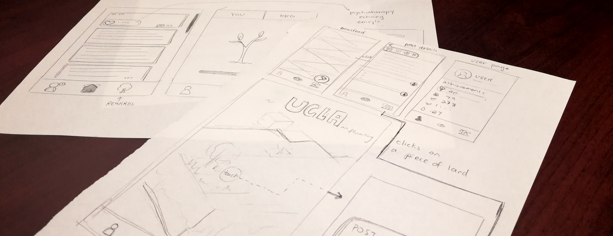

How did I get here?

■_ In July 2017, as an initiative to encourage LA Metro ridership, I helped design and code MetroOrDrive, a tool to help commuters save money and time.
At the same time, I worked on a variety of interactive projects that made me realize my passion for design.
In the two years leading up to this moment of revelation, I have cleaned metadata for a startup, scrubbed PHI for a research lab, spent a year trying to automate psychotherapy, and cashiered at a Chinese restaurant with 3.5 stars on Yelp.
■_ Luckily, I am now doing what I love most - creating beautiful, human-centered solutions with diverse teams for diverse users.
I’m currently finishing my degree in Linguistics and Computer Science at UCLA. Before college, I spent my formative years in Canada exploring beautiful national parks and shoveling snow. Oh, and staring at geese from a distance.
I was born and raised in China, where I developed my northerner palate and fondness for authentic street food. The pronounciation for my name is /wǎntɪ́/, but you can just call me Wendy.
■_ Enough about me, tell me about you!